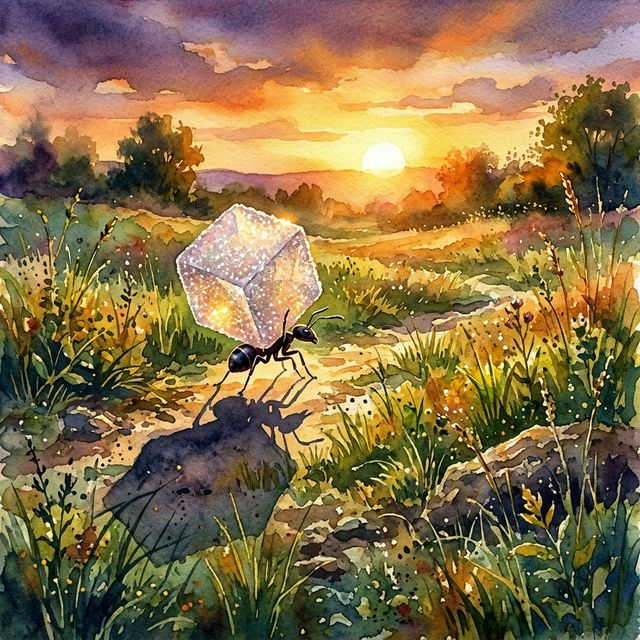
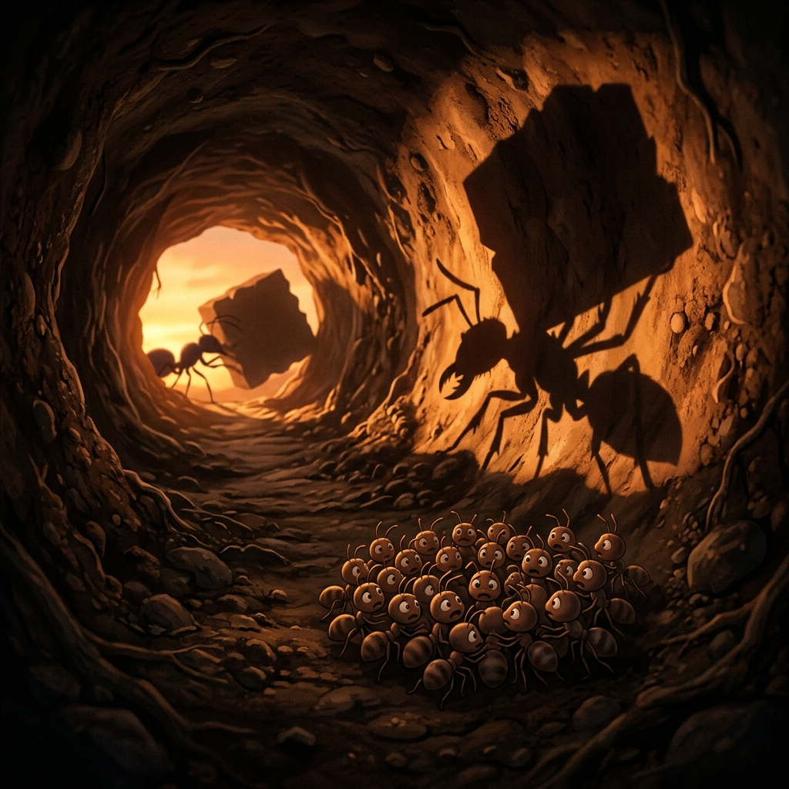
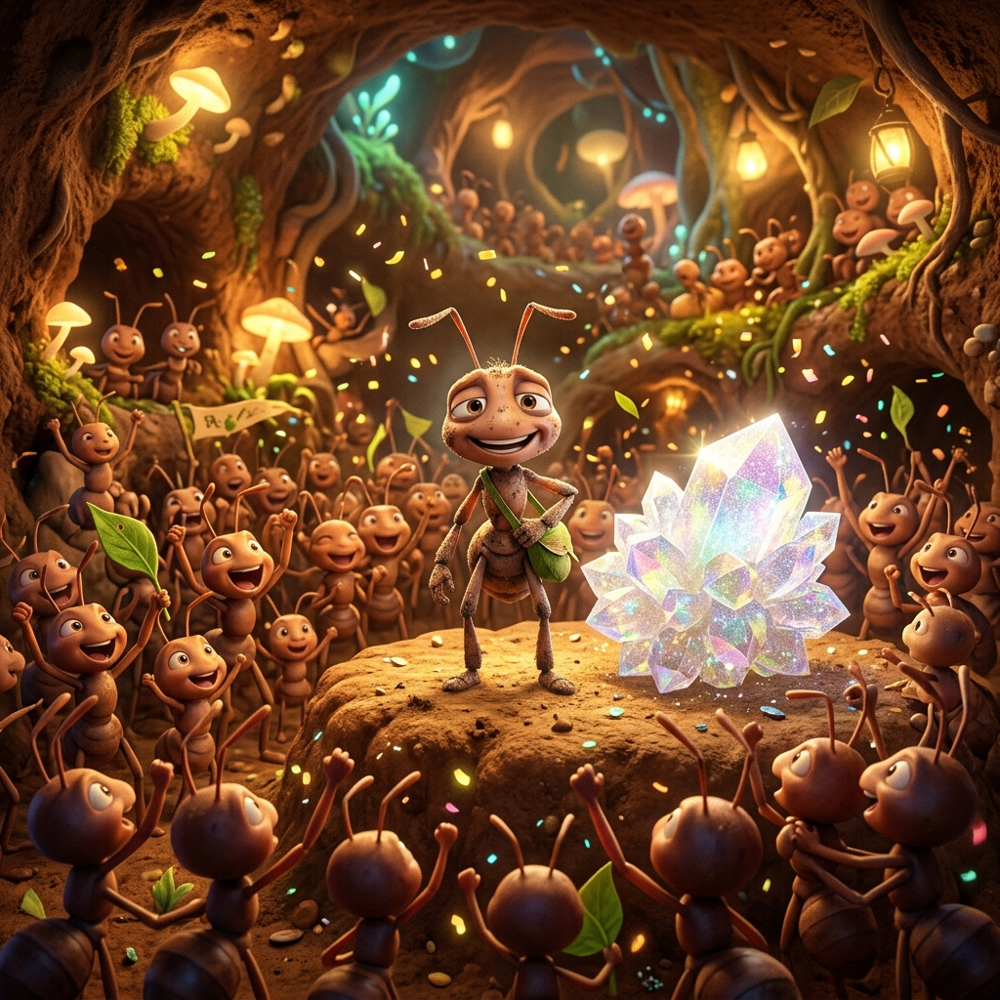

The Giant Shadow
The morning sun rose bright and warm over the meadow. Inside the bustling ant colony, the workday had already begun. With the rainy season just a few months away, every ant was on an urgent mission to gather as much food as possible.
Among the workers was Jenn, a very little ant with a very big determination. While the older, larger ants quickly found seeds and crumbs and eagerly began their march back to the nest, Jenn’s search turned up absolutely nothing.
Hours passed. As the afternoon wore on, the successful ants began to pass him by on their way home. Seeing the little ant empty-handed, they began to laugh and sneer.
"Hey, little boy! Just go home," one mocked, balancing a piece of a leaf on his back. "You haven't found a single thing. The sun is going to hide in a few hours, and the dark will come. Give up!"
Jenn felt a pang of worry. He had traveled far, and his legs were tired, but he refused to return empty-handed. He pushed forward. Finally, just as he was losing hope, he spotted it: a massive, glittering crystal of sugar. It was easily three times bigger than Jenn himself!

The Long Trek Home
He was overjoyed, but as he looked at it, he worried about the immense size and weight. Mustering every ounce of his strength, Jenn hoisted the giant sugar crystal onto his back. His legs trembled, but he started the long, grueling trek home.
Meanwhile, the sky turned a deep, fiery red. With only an hour left before the sun disappeared completely, the rest of the colony was safely inside the nest. They noticed Jenn was missing. "He failed," they whispered to each other, chuckling at the little ant's expense.
The Terror in the Tunnel
Outside, Jenn was pushing himself to the absolute limit. As he finally approached the entrance of the nest, the setting sun cast a long, stretching shadow of him and the massive sugar cube.
Inside the tunnel, the other ants saw a terrifying, bulky silhouette looming toward them. Panic swept through the colony! They thought a giant monster was coming to attack them. They huddled together in fear as the giant shadow drew closer and closer.

A Hero's Welcome
But as the "monster" stepped into the tunnel, the terrifying shadow shrank down to reveal... little Jenn, carrying the biggest piece of food anyone had seen all day.
The fear instantly turned to awe. The very same ants who had laughed at him earlier began to cheer and shout.
"Hey Jenn, you're a superman!" they yelled. "What an amazing achievement!"
Hearing their cheers, Jenn smiled, exhausted but proud. He dropped the sugar cube safely inside the nest, having learned a valuable lesson that day.
